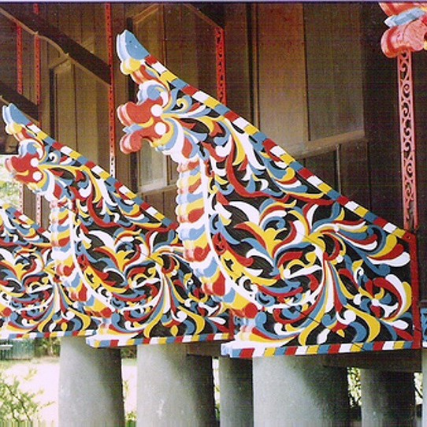
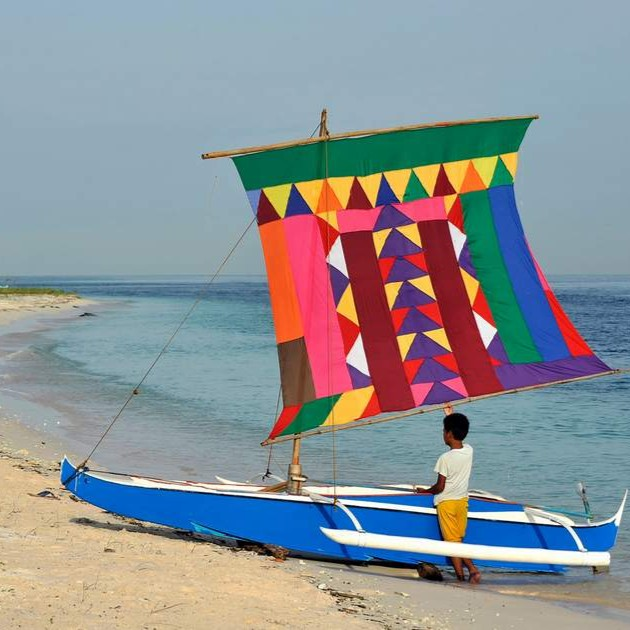
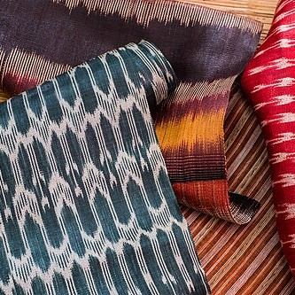
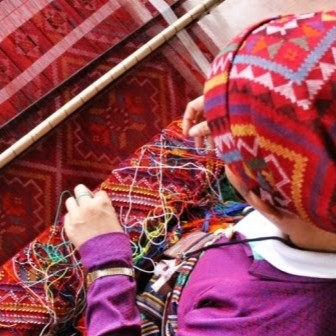

Mindanao’s art is world-renowned for its intricate patterns and bold, symbolic representations of nature and spirit.
Focus: Identifying the "Look" of Mindanao

The Okir is a traditional curvilinear, plant-based design that is central to Maranao art. It is commonly found in woodcarvings such as the Torogan (royal house) and the Panolong (ornately carved house beam). This design reflects the rich cultural identity and artistic heritage of the Maranao people in Mindanao.

The Vinta are colorful traditional sailboats from Zamboanga that reflect the region’s rich maritime history and culture. Their vibrant sails are often decorated with geometric patterns that symbolize the identity of the local communities. Vintas are both functional fishing boats and cultural symbols of seafaring heritage in the southern Philippines.

The T’nalak is a traditional “dream-weaved” cloth of the T’boli people, made from abaca fibers. Its intricate patterns are believed to be revealed to weavers through dreams, guiding their designs. This textile represents spirituality, creativity, and cultural identity in Mindanao.

Yakan weaving is a traditional craft of the Basilan known for its high-precision geometric patterns and vibrant colors. It is often associated with the Yakan people’s cultural identity and artistic expression. The designs are also reflected in their elaborate face makeup and ornaments used during weddings and special ceremonies.